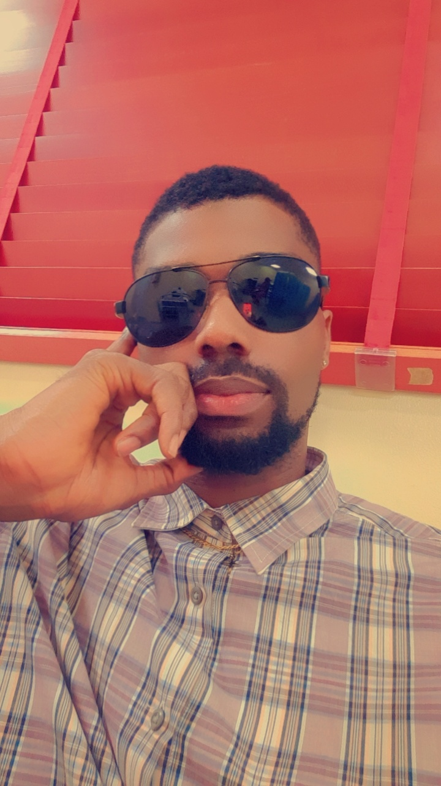

My name is Emmanuel Effiom Bassey. This is a story about my very first experience in Code Campus International.
At first,It was a bit of a challenge to locate the address. When I eventually made it to the building, I missed my way, and I had to ask the security man for direction on how to locate my class.
I was about 30 minutes late because of my ordeal of trying to find my class. When I walked in, I met class mates and my lecturers.
The name of the lecturer that took us through the first class is Mr. Moses. He was so graceful and welcoming in taking us through the introductory aspects of the course outline for the next sixteen weeks. It was quite interesting at first, but it became scary when he told us that there was difficult times ahead. It shook me to my core, mainly because I lack ICT background knowledge.
It is quite interesting, what acquiring the knowledge of software engineering can do for an individual.
I want to be able to provide solutions to problems people face in their business, organizations, and private lives
I want to build softwares that will help my music production skills, enhance the quality of my sound, and make better music. I also want to be a software developer for Tech organizations in order to expand my capacity.
I want to be able to have the ability to make the most complex tasks easy to go about by the common man that my not be technologically inclined by prviding softwares with very easy-to-use interface to help them navigate their business.
I also look to provide platforms that would render help to petty traders, provide platforms that would help promote and push the agricultural sector to levels where people from all spheres of life can come together to do business and make money without worries.
I have a bunch of hobbies, but the things that interest me the most are singing, creating beats, travelling, playing football, playing basketball, and providing assistance to the vulnerable.
Whenever I am singing or making new music, I feel elated. It is always the best time of my life. I hope to become a successful artiste in the nearest future.
Another thing I really enjoy doing is creating instrumentals. It is always a vibe whenever I get into that creative zone, because it is a moment of magic for me. The sound of clean electric guitar, violin, nice percussion and amazing drumlines, accompanied with strings lifts my spirit and that of the people around me when I am in that creative zone.
I cannot over emphacize how much I love and enjoy travelling, because it is a time learning and relaxation for me. Before insecurity became the order of the day in my country, I used to enjoy making road trips, because of the view of the fresh vegetations, the beautiful view of the amazing river Niger. I also love to make international trips because it is an opportunity for me to experience new cultures, meet new people, and network.
I love to play football and basketball because it is an opportunity for me to keep fit and stay healthy, while I do what I enjoy.
I always try to help people in whatever capacity I can afford. There is the type of inexplicable pleasure my soul derives when I am anle to put a smile on someone's face. I am an advocate for love, unity, and togetherness.